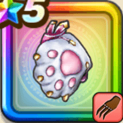

にくきゅうミトン
攻略班 8.5点 / あしばらいにゃんこアッパーチョコレイト・フィストウォールブレイカーかいしんプリンセス
くわしい特徴
【レベル別習得スキル】 Lv1【ゴドハン】攻撃力+5 Lv1【魔人】会心率+1% Lv10あしばらい（消費MP：4）敵1体に威力120%の体技ダメージを与えたまに転ばせる Lv20にゃんこアッパー（消費MP：53）敵1体に930%の体技ダメージとたまに転びと守備減を付与(物質系には1150%となりガードやみかわしされない) Lv30チョコレイト・フィスト（消費MP：59）敵全体に730%の体技ダメージとたまに転びと守備減を付与。敵撃破毎にMP10回復(物質系には780%となりガードやみかわしされない) Lv33物質系へのダメージ+5% Lv36物質系へのダメージ+5% Lv40攻撃力+12 Lv45【二刀】二刀流時の斬撃・体技によるダメージ+5% Lv50ウォールブレイカー（消費MP：最大MPの2%）戦闘開始時に自身の特殊効果「物質系へのダメージ+」の効果値を2.2倍にする(効果4ターン) Lv50かいしんプリンセス（消費MP：14）戦闘開始時に自身の会心率を上げ「チョコレイト・フィスト」か「にゃんこアッパー」で会心発生時、耐性を無視してしゅび力を下げる 【限界突破スキル】 1凸スキルの斬撃・体技ダメージ+7% 2凸スキルの斬撃・体技ダメージ+7% 3凸スキルの斬撃・体技ダメージ+7% 4凸スキルの斬撃・体技ダメージ+7%